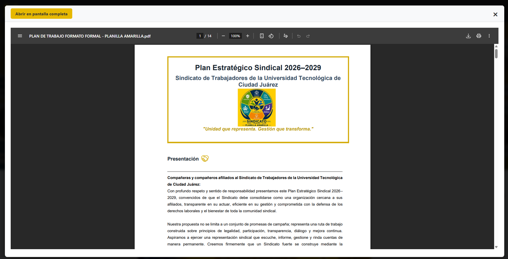
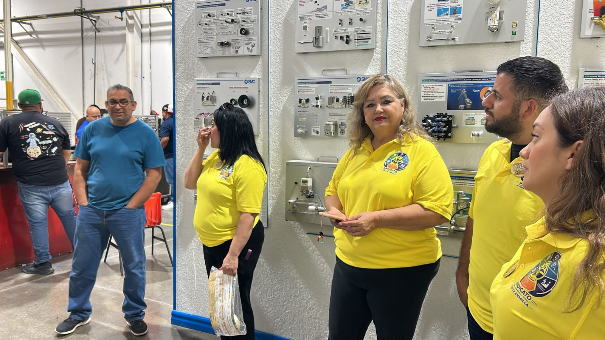
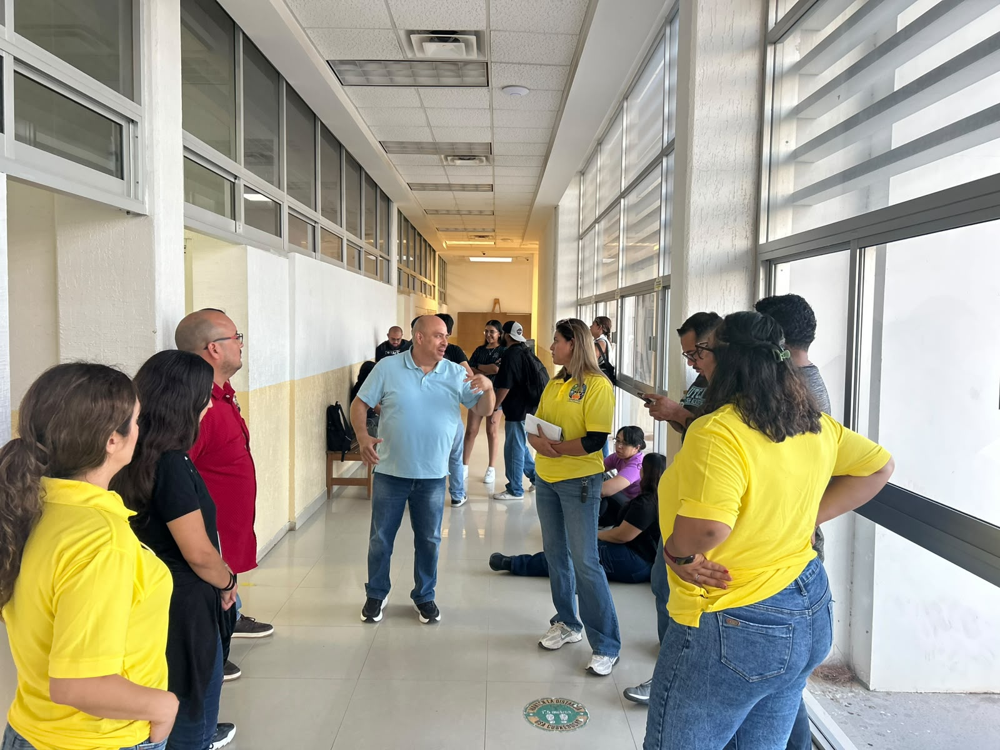
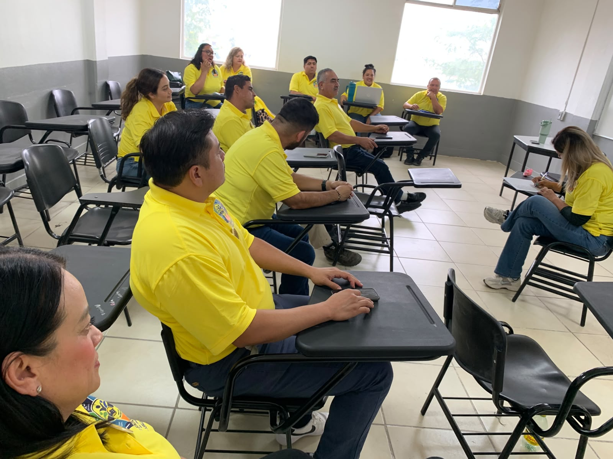
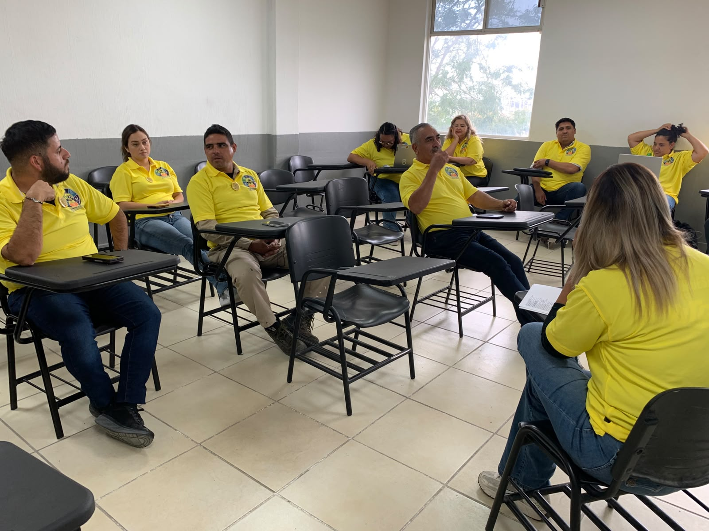
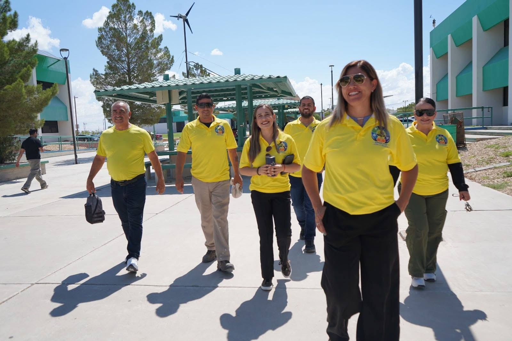
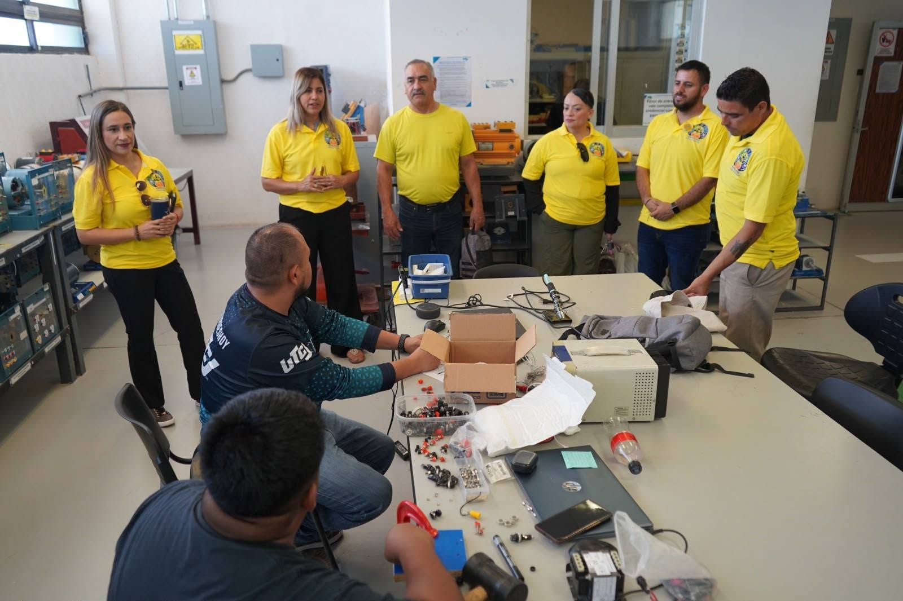

Sindicato de Trabajadores de la Universidad Tecnológica de Ciudad Juárez (STUT-CJ).


Ante una gran afluencia de compañeros, desglosamos los ejes principales que guiarán nuestra gestión 2026-2029. ¡Gracias por su apoyo! #Planilla Amarilla Stut-Cj


El equipo de la Planilla Amarilla mantiene el dinamismo en su campaña, llevando sus propuestas directamente a los espacios de trabajo de la institución.
Comenzaron sus recorridos escuchando de primera mano las necesidades de nuestros compañeros de las diferentes áreas, de talleres y laboratorios.
#Planilla Amarilla Stut-Cj


Se llevó a cabo una importante reunión de trabajo por parte de los integrantes de la Planilla Amarilla, quienes afinan los detalles de su proyecto enfocado en el fortalecimiento de la comunidad de los sindicalizados STUT-CJ. Durante la mesa de trabajo, se abordaron ejes fundamentales para la base trabajadora, proyectando sus objetivos principales: Defensa y bienestar, Respaldo académico, Diálogo abierto. #Planilla Amarilla Stut-Cj


Recorrimos distintas áreas de nuestra Universidad para presentar nuestras propuestas y dialogar con compañeras y compañeros de diferentes departamentos. Escuchamos con atención sus inquietudes, necesidades e ideas, porque estamos convencidos de que un sindicato fuerte se construye escuchando a quienes representa. Agradecemos el tiempo, la confianza y el compromiso de cada persona que nos recibió. Vamos juntos a transformar nuestro sindicato. #Planilla Amarilla Stut-Cj
Es momento de modernizar nuestro sindicato. Una credencial sindical nos permitirá identificarnos de forma ágil y segura, facilitando el acceso a reuniones, eventos y diversos servicios. Menos filas, menos trámites y más beneficios para las y los agremiados. Este 6 de agosto, vota por la Planilla Amarilla. Juntos podemos construir un sindicato más moderno, eficiente y cercano a su gente. #Planilla Amarilla Stut-Cj
Un grupo de profesionales comprometidos con la transparencia y la defensa de tus derechos.

Secretaria General
Profesor de asignatura con función tutorial (PACFT), Mantenimiento Industrial 13 años en la Universidad, 10 en el sindicato

Secretario de Organización
Profesor de tiempo completo. 15 años en la Universidad. Profesor Inevestigador, carrera de Ingeniería en Logística Internacional.

Secretaria de Actas y Acuerdos
PA con función administrativa en el Departamento de idiomas e internacionalización. 8 años en la Universidad 7 sindicalizada.

Secretaria de Trabajo
Ing.Logística Internacional, PA con Función tutorial, 8 años en la Universidad, 2 años en el sindicato

Secretario de Finanzas
Adscrito a la carrera de Mecatrónica, 21 años y 10 meses como profesor de tiempo completo en la Universidad, 2 años en el Sindicato

Secretaria de Educación, Cultura y Deportes
Coordinadora académica de la carrera de Tecnologías de la Información, 13 años en la Universidad , 10 años en el sindicato.

Secretario de Prensa y Propaganda
Tecnologías de la información, PTC, 14 años en la Universidad,10 años sindicalizado.

Secretario de Previsión Social
Profesor de asignatura con función tutorial en las carreras de terapia física y paramédico, 7 años en la Universidad, 2 años en el sindicato.

Secretaria de Escalafón
Adscrita a la carrera de Tecnologías de la información, profesor de tiempo completo, 25 años en la Universidad, 10 años en el sindicato.

Suplente de Secretaria General
Departamento de Mantenimiento Industrial, P.A. Función Tutorial, 13 años en la Universidad, 10 años sindicalizado

Suplente de Secretario de Organización
Adscrito en Desarrollo académico, PTC Carrera de Mantenimiento Industrial,11 años en la Universidad, 1 año y 9 meses sindicalizado

Suplente de Secretaria de Actas y Acuerdos
PTC Mantenimiento Industrial. 15 años, 10 meses en la Universidad, 10 años sindicalizada.

Suplente de Secretaria de Trabajo
Jefa de oficina en Ingeniería en Logística Internacional, 7 años en la Universidad, 2 años en el sindicato.

Suplente de Secretario de Finanzas
Profesor de asignatura del área de mantenimiento industrial, 8 años en la Universidad, 7 años en el sindicato.

Suplente de Secretaria de Educación, Cultura y Deportes
Técnico en mantenimiento. Depto. Mantenimiento e instalaciónes, 4 años en la Universidad,2 años sindicalizado.

Suplente de Secretario de Prensa y Propaganda
Tecnologías de la información, Profesor de Asignatura con función tutorial, 13 años en la Universidad,10 años sindicalizado.

Suplente de Secretario de Previsión Social
Profesor de asignatura de la carrera de Mecatrónica y Energía turbo solar con 12 años de antigüedad en la Universidad y 10 años perteneciendo al sindicato.

Suplente de Secretaria de Escalafón
PTC Mantenimiento Industrial, 15 años en la Universidad, 10 años sindicalizada